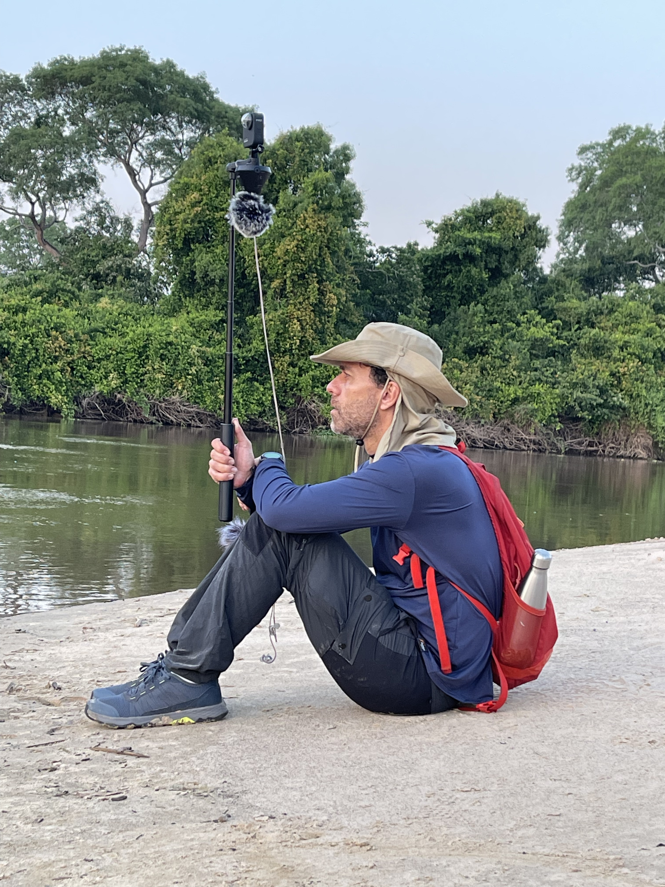

poéticas da transdução
escuta, ecologia sonora e tecnodiversidade
José Henrique Padovani
PPGMUS / Escola de Música / Universidade Federal de Minas Gerais
Projeto Pantanal Sounds
Corumbá · Base de Estudos da UFMS · outubro 2023
I. O Pantanal e a escuta

- mediação perceptiva
- Lugar de escuta transformado, adaptado e deslocado pela mediação
- mediação como algo que, ao mesmo tempo, engendra um lugar de escuta e que, ao mesmo tempo, é instaurada por um gesto técnico e criativo.
Simondon: ao estender prosteticamente o corpo, a ferramenta e o instrumento também mudam nossa atuação/transformação no mundo.
A acoplagem pode assim comportar uma transformação, por exemplo uma adaptação de impedâncias; a mão ou o pé são pouco eficazes para agir sob a água, e menos ainda sobre o ar: a superfície das extremidades dos membros pode ser aumentada por ramos, palmas, um leque ou, mais ou menos ilusoriamente, pela asas de Ícaro ...
(SIMONDON, 1958, p. 90, t.n.)
Bateson, alegoria do homem cego que caminha com a ajuda de uma begala:
- Onde termina o "eu" do sujeito que percebe?
- Na pele da mão? Na ponta da bengala?
- Insuficiência evidente de dualidades: corpo/mente, orgânico/técnico, sujeito/mundo.
Lugar-escuta e multinaturalismo
Viveiros de Castro
Não há uma única natureza compartilhada: diferentes perspectivas e posições no mundo constituem
diferentes naturezas.
Cada ser no habitat Pantanal constitui, percebe, vive e auta em uma natureza própria.
Do ponto de vista dos sons e de sua percepção e produção: cada ser instaura um lugar.
Instauração de um lugar-escuta
Não registrar, criar ou representar uma paisagem, mas estabelecer um território, um lugar-escuta e um lugar-imaginação.
Perguntas que emergiram:
- O que fazer com esses sons?
- Como colocar o violoncelo ao lado dos bugios sem torná-los coadjuvantes?
- Como, em poucos minutos, convidar ouvintes para essa escuta?
- Como usar ferramentas computacionais para construir esse lugar?
- Como não reproduzir implicitamente a hierarquia humano / coadjuvante?
Ecologia sonora: não uma escolha
A ecologia dos sons não foi um objeto de pesquisa que escolhi, foi um tema que me capturou, obrigando-me a reavaliar minha prática de pesquisa e criação artística.
- Escuta, criação e mediação técnica como problemas concretos
- Emergentes em: lugares específicos · dispositivos específicos · relações específicas
Pergunta que se impôs:
Que sentido ético, político e sociocultural tem a escuta e a proposição de escutas, isso que, ao fim, é aquilo do que se ocupa alguém que compõe?
III. "nós, passarinho" — Inhotim (2023)
nós, passarinho
para flauta e eletrônica em tempo real · 2023
- Semana do Meio Ambiente · Inhotim · 2023
- Cássia Lima (flauta) · Murillo Corrêa (eletrônica)
- Largo das Orquídeas · Galeria Cildo Meireles
- Multicanal 8 ch. · microfone sem fio
- Estantes-poleiro · gaiolas com alto-falantes bluetooth
-
Contradição ambiental de Inhotim:
oásis / território violentado de Brumadinho

Espaços sobrepostos
Gravações em Inhotim e Belo Horizonte usando áudio 3D. A intenção era explorar a coexistência de territórios invisíveis uns aos outros.
- Inspiração no romance The city and the city (China Miéville)
- Duas cidades ocupam o mesmo espaço, mas seus habitantes não se percebem nem interagem
Na composição:
O território humano: delineado pelos sons da cidade (BH) e de pessoas e máquinas (Inhotim).
O território dos pássaros: sobreposto metros acima, presente no mesmo ambiente, mas que ignoramos rotineiramente.
Simondon — cadeia de transdução
Acoplagem de dispositivos que permite que os sons sejam transformados em materiais criativos.
sons captados → análise → resíntese
→ transcrição → notação experimental → performance
A bengala: construída para aprender a solfejar e tatear o território sonoro dos pássaros.
Transformação da escuta
Individuação sonora: algo se destaca do fundo e torna-se figura.
- Antes: pássaros como ambiência — fundo tranquilo
- Depois: pássaros como informação ativa — dezenas de vozes individuais
- Espécie · gestualidade · enunciados · dramaticidade · "humor"
Da sensação de caminhar entre sons em segundo plano
→ caminhar entre vozes que disputam a atenção de maneira exigente e impositiva
Aprender uma língua estrangeira em outro país:
chegar atordoado ao fim do dia — reconfiguração de processos cognitivos.
De volta ao Pantanal
De nós, passarinho:
→ Como criar um lugar em que o ouvinte não saiba onde está?
Do Pantanal — outra pergunta:
→ Se o mundo é uma composição, posso ser co-criador com os sons do Pantanal?
→ William seria mais um animal dentre tantos outros.
O que se colocou:
- Com quem estou quando escuto?
- Como, junto a esses outros seres, constituo um lugar-escuta?
- Como não reproduzir a hierarquia problemática em que o humano é protagonista e os outros, coadjuvantes?
IV. As peças
toté
violoncelo e eletrônica em tempo real · 2025
- Estreia: abr/2025 · Université Paris 8
- Semana Brasil na Paris 8
- William Teixeira (violoncelo, UFMS)
- Makis Solomos e André Villa (Paris 8)
- Reapresentada: ANPPOM · Campo Grande, out/2025
second nature
coro, rói-róis e sistemas interativos · 2025
- Estreia: dez/2025 · Dresden / Berlim
- Miriam Akkermann (FU Berlin)
- Singakademie Dresden
- Direção: Michael Käppler
toté — a decisão composicional
William e seu violoncelo não poderiam ser o sujeito humano à frente de uma paisagem ao fundo.
Ele precisaria integrar-se lentamente ao território como mais um animal entre outros.
Escrita para o violoncelo:
- Luneta — recorta frequências e motivos do tecido sonoro das gravações
- Animal — comportamentos sonoros que interagem no habitat com outros animais
- Sujeito expressivo — destaca-se pela dramaticidade, mas em convivência, nunca à frente de um fundo
Não hierarquia — habitat compartilhado.
Rodolfo Caesar
- Algoritmos de síntese FM
- Simulação de comportamentos de insetos
- Som como comportamento, não representação
Carola Bauckholt — Instinkt
- Comportamentos sonoros não-humanos
- Relação entre performer e material
- Escuta que ultrapassa o "reduzido"
IV. Referências
Instinkt
Carola Bauckholt · [ca. 2 min.]
A noção de "escuta reduzida" ou de "paisagem sonora" não me era suficiente para elaborar como, enquanto sujeitos, nos relacionamos aos sons desses outros sujeitos, humanos ou não.
IV. Referências
Jean-Luc Nancy — À l'écoute
"O sujeito da escuta ou o sujeito que escuta [...] não é um sujeito fenomenológico, isto é, não é um sujeito filosófico e, em última análise, talvez não seja sujeito algum, a não ser o lugar da ressonância de sua tensão e de seu reverberar infinitos, a amplitude do desdobramento sonoro e a tenuidade de seu decaimento simultâneo — por meio do qual se modula uma voz na qual vibra, ao refugiar-se nela, o singular de um grito, de um apelo ou de um canto (uma 'voz': é preciso escutar aquilo que soa de uma garganta humana sem ser linguagem, o que sai da goela de um animal ou de um instrumento qualquer que seja, ou mesmo do vento nos galhos: o sussurro ao qual escutamos ou damos o ouvido)."
Cadeia de transdução em toté
Apropriar-me e criar mecanismos práticos e poéticos que permitissem estruturar uma cadeia de transdução:
Não mais solfejar e transcrever sons de pássaros —
mas criar um lugar-escuta que acomodasse, em um mesmo habitat,
os sons do Pantanal, os sons do violoncelo
e a gestualidade do performer.
A cadeia:
sons captados em Corumbá (madrugada, 2023)
→ ferramentas computacionais de análise e síntese
→ violoncelo + microfone + alto-falantes
→ sala de apresentação (Paris, 2025)
second nature — escalando a pergunta
Em toté: "com quem escuto?"
→ eu + William + animais do Pantanal
Em second nature: a mesma pergunta em situação coletiva
- Cantores de um coro que eu mal conhecia
- Público (sempre uma incógnita)
- Sons de animais do Pantanal e do xeno-canto
- Colaboradores anônimos que registram e compartilham gravações pelo mundo
Como escalar essa pergunta sem a sorte
de uma relação de amizade e parceria já consolidada?
V. "second nature"
Técnicas de escuta de máquina
- Identificar ritmo, frequência fundamental, padrões
- Separar camadas sonoras
- Segmentar fala: sílabas, pausas, fonemas
- Não antropomorfização — extração de dados acústicos
- Poesia concreta como referência literária
Como interagir?
- Fones + streaming? · Captar plateia? · Distribuir instruções?
- "Tudo isso me parecia muito pouco natural"
- Queria algo mais lúdico e orgânico
- Que fizesse a audiência se comportar de maneira espontânea
- Sem ruptura no ato natural de escutar sons em um lugar
Segunda natureza
Conceito filosófico antigo:
hábitos e práticas culturais que se tornam uma segunda natureza.
Versão transumanista (Musk, Vale do Silício):
colonizar Marte · descartar "a primeira" natureza
Aqui:
Não transformar o humano · não descartar a primeira —
Reinserir-se no próprio meio:
natural ou artificial, compreendê-lo de dentro,
não como paisagem percebida de longe.
Multinaturalismo: não uma natureza compartilhada,
mas naturezas constituídas por perspectivas e posições no mundo.
VI. Tecnodiversidade e a força do lugar
Yuk Hui — Tecnodiversidade
Assim como a biodiversidade é condição para a vida, a diversidade de imaginações tecnológicas — enraizadas em diferentes culturas, práticas e modos de habitar o mundo — é condição para um mundo habitável.
- Contra a monotecnologia globalizante — que achata diferenças
- Artefatos situados — enraizados em culturas e modos de habitar
- Não consumidores entorpecidos — criadores ativos da percepção, imaginação e sensibilidade
- Poética da transdução como mecanismo de produção de lugares-escuta
VI. Tecnodiversidade e a força do lugar
Milton Santos — "A força do lugar"
Para que algo deixe de ser uma paisagem e se torne algo muito mais rico — um território que não apenas nos dá suporte material, mas que se entranhe profundamente em nossa percepção, imaginação e responsabilidade — é preciso escutar de dentro, é preciso reinventar de maneira diversa e particular os artefatos técnicos e simbólicos que nos ajudam a tatear esse território que tem aquilo que Milton Santos denominava a "força do lugar".
- Campo intermídia: o que está entre mídias, dispositivos, seres e lugares
- Escutar de dentro · reinventar artefatos técnicos e simbólicos
- Poéticas da transdução como instauração de lugares-escuta
Obrigado!
toté (2025)
para violoncelo e eletrônica ao vivo
Violoncelo: William Teixeira · Composição/eletrônica: José Henrique Padovani
Amphithéâtre X · Université Paris 8 · Semaine Brasil Paris 8 Periferias · 2 de abril de 2025 [live / non-mixed audio]
"second nature" (2025)
para coro, rói-róis e live-electronice
Singakademie Dresden · dir. Michael Käppler · José Henrique Padovani
Production: Miriam Akkermann [live / non-mixed audio]
Freie Universität Berlin · Institut für Philosophie · Berlim · 7 de dezembro de 2025
Referências